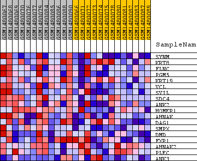
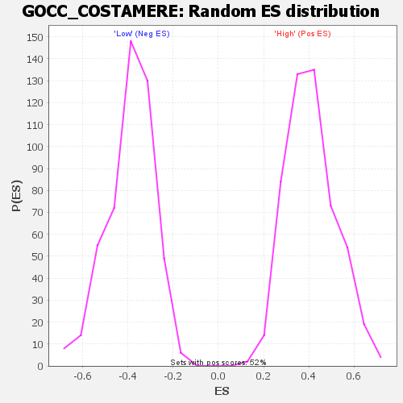

Profile of the Running ES Score & Positions of GeneSet Members on the Rank Ordered List
| Dataset | WG6v3.MRPL3.cls#High_versus_Low.MRPL3.cls#High_versus_Low_repos |
| Phenotype | MRPL3.cls#High_versus_Low_repos |
| Upregulated in class | High |
| GeneSet | GOCC_COSTAMERE |
| Enrichment Score (ES) | 0.7970776 |
| Normalized Enrichment Score (NES) | 1.9464204 |
| Nominal p-value | 0.0 |
| FDR q-value | 0.010887622 |
| FWER p-Value | 0.171 |
| SYMBOL | TITLE | RANK IN GENE LIST | RANK METRIC SCORE | RUNNING ES | CORE ENRICHMENT | |
|---|---|---|---|---|---|---|
| 1 | SYNM | SYNM | 109 | 0.281 | 0.1256 | Yes |
| 2 | KRT8 | KRT8 | 142 | 0.255 | 0.2429 | Yes |
| 3 | FLNC | FLNC | 144 | 0.252 | 0.3607 | Yes |
| 4 | PGM5 | PGM5 | 156 | 0.247 | 0.4753 | Yes |
| 5 | KRT19 | KRT19 | 428 | 0.165 | 0.5381 | Yes |
| 6 | VCL | VCL | 457 | 0.160 | 0.6113 | Yes |
| 7 | SVIL | SVIL | 661 | 0.132 | 0.6627 | Yes |
| 8 | SDC4 | SDC4 | 791 | 0.121 | 0.7125 | Yes |
| 9 | ANK2 | ANK2 | 944 | 0.108 | 0.7553 | Yes |
| 10 | HOMER1 | HOMER1 | 1387 | 0.083 | 0.7713 | Yes |
| 11 | AHNAK | AHNAK | 1570 | 0.075 | 0.7971 | Yes |
| 12 | DAG1 | DAG1 | 2176 | 0.058 | 0.7927 | No |
| 13 | SMPX | SMPX | 2954 | 0.042 | 0.7723 | No |
| 14 | DMD | DMD | 3641 | 0.033 | 0.7523 | No |
| 15 | FXR1 | FXR1 | 6763 | 0.009 | 0.5958 | No |
| 16 | AHNAK2 | AHNAK2 | 9920 | -0.003 | 0.4344 | No |
| 17 | PLEC | PLEC | 10418 | -0.004 | 0.4108 | No |
| 18 | ANK3 | ANK3 | 18755 | -0.114 | 0.0344 | No |

